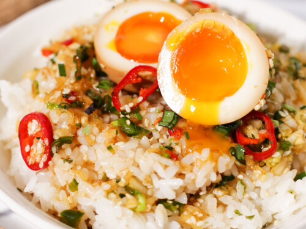

Mayak Eggs

Prep Time: 15 minutes
Marinate Time: 24 hours
Serving: 6 eggs
Marinated eggs so good they're called "drug eggs" in Korean!
Instructions
Marinade
- 1 cup soy sauce
- 1 cup water
- 1/4 cup honey
- 1 tbsp dark soy sauce
- 1 tbsp mirin
- 1 tbsp Lao Gan Ma
- 1 tsp rice vinegar
- 1 tsp sesame oil
Dry Ingredients
- 6 soft-boiled eggs
- 1-3 cloves of garlic (depending on size)
- 1-2 chopped green onions
- 1/3 onion, sliced
- 1 tbsp white vinegar
- Pinch of salt
- Pinch of sesame seeds
Marinade
- 1 cup soy sauce
- 1 cup water
- 1/4 cup honey
- 1 tbsp dark soy sauce
- 1 tbsp mirin
- 1 tbsp Lao Gan Ma
- 1 tsp rice vinegar
- 1 tsp sesame oil
Dry Ingredients
- 6 soft-boiled eggs
- 1-3 cloves of garlic (depending on size)
- 1-2 chopped green onions
- 1/3 onion, sliced
- 1 tbsp white vinegar
- Pinch of salt
- Pinch of sesame seeds
- Heat olive oil and butter on medium heat in a large, deep pan- use a pot if you don't have one.
- Once the oils are hot, place the tomatoes around the edge.
- Then place the diced onions, diced bell peppers, and minced garlic in the center.
- Cover and cook for at least 10 minutes over medium heat.
- In the meantime, slice up some sourdough and brush it with olive oil.
- Toast the sourdough slices and set aside for later. This might take a while, depending on the speed
of your toaster.
- When the tomatoes are soft, mash and stir until the mixture has a saucelike quality.
- Mix in the spices and the tomato paste.
- Reduce and simmer until any liquid on the top cooks down.
- When the sauce is somewhat thick, create 5 wells in the sauce for each egg.
- Crack one egg in each well, then cover and cook for 5 minutes or to your liking.
- When the eggs are done, remove pan from heat.
- Top with fresh parsley.
- Serve in the pan, using the toasted sourdough to scoop up heapings of your Shakshuka.
- Enjoy!